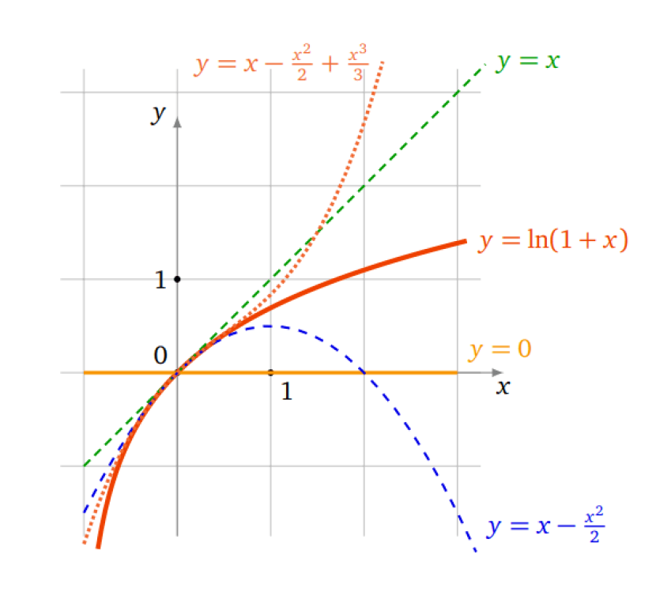

Formule de Taylor
Soit \(f : I\rightarrow\mathbb{R}\) une fonction de classe \(\mathscr{C}^{n+1},\,(n\in\mathbb{N},\) et soit \(a, x ∈\in I.\) Il existe un réel \(c\) entre \(a\) et \(x\) tel que:
\[ f(x)=f(a)+f'(a)(x-a)+\frac{f''(a)}{2!}(x-a)^2+...+\frac{f^{(n)}(a)}{n!}(x-a)^n+\frac{f^{(n+1)}(c)}{(n+1)!}(x-a)^{n+1} \]
On notera par \(T_n\) la partie définie par
\[ T_n(x):=f(a)+f'(a)(x-a)+\frac{f''(a)}{2!}(x-a)^2+...+\frac{f^{(n)}(a)}{n!}(x-a)^n \]
Soient \(a, x \in\mathbb{R},\,(a<x).\) Pour tout entier \(n > 0\) il existe \(c\in]a,x[\) tel que
\[ \exp x=\exp a+\exp (a).(x-a)+\frac{\exp (a)}{2!}.(x-a)^2+\ldots+\frac{\exp (a)}{n!}.(x-a)^n+\frac{\exp (c)}{(n+1)!}.(c-a)^{n+1} \]
Dans la pratique, le nombre \(c\) ne s’éstime qua approximativement (via un encadrement), la proposition suivante en donnera un.
Si en plus la fonction \(|f^{(n+1)}|\) est majorée sur \(I\) par un réel positif \(M,\) alors pour tout \(a,\,x \in I,\) on a:
\[ |f(x)-T_n(x)|\leq M\frac{|x-a|^{n+1}}{(n+1)!} \]
Approximation de \(\sin(0,01)\)
Soit \(f(x)=\sin(x),\) alors \(f'(x)=\cos x,\,f''(x)=-\sin x,\,f^{(3)}(x)=-\cos x,\\ \,f^{(4)}(x)=\sin x.\)On obtient donc\(f(0)=0,\,f'(0)=1,\,f''(0)=0,\,f^{(3)}(x)=-1.\)La formule de Taylor ci-dessus en\(a=0\)à l’ordre 3 devient\(f(x)=0+1.x+0.\frac{x^2}{2!}-1.\frac{x^3}{3!}+f^{(4)}(c)\frac{x^4}{4!}\)
Pour \(x=0,01,\) et en négligeant le reste (qui est assez petit), on obtient:
\[ \sin(0,01)\approx 0,01-\frac{(0,01)^3}{6}=0,00999983333... \]
Dans ce théorème l’hypothèse \(f\) de classe \(\mathscr{C}^{n+1}\) peut-être affaiblie \(f\) est “\(n+1\) fois dérivable sur \(I\)” sans avoir besoin que \(f^{(n+1)}\) soit continue.
Pour \(n=0\) c’est exactement l’énoncé du théorème des accroissements finis : il existe \(c\in ]a,b[\) tel que \(f(b)=f(a)+f'(c)(b-a).\)
Si \(I\) est un intervalle fermé borné et \(f\) de classe \(\mathscr{C}^{n+1},\) alors \(f\) est continue sur \(I\) donc il existe un \(M\) tel que \(|f^{(n+1)}(x)|\leq M\) pour tout \(x\in I.\) . Ce qui permet toujours d’appliquer la proposition.
Soit \(f : I\rightarrow\mathbb{R}\) une fonction de classe \(\mathscr{C}^{n},\,(n\in\mathbb{N},\) et soit \(a\in I.\) Alors pour tout \(x\in I\) on a:
\[ f(x)=f(a)+f'(a)(x-a)+\frac{f''(a)}{2!}(x-a)^2+...+\frac{f^{(n)}(a)}{n!}(x-a)^n+(x-a)^n \varepsilon(x) \]
avec \(\varepsilon(x)\rightarrow0\) quand \(x\rightarrow a.\)
Soit \(f :]-1,+\infty[\rightarrow \mathbb{R},\, x \mapsto\ln(1+x);\) \(f\) est infiniment dérivable. Appliquons la formule de Taylor-Young à la fonction \(f\) au voisinage de \(0,\) soit \(T_n\) la fonction polynômiale associée à chaque \(n,\) pour cela on calcule d’abord \(f^{(k)}(0)\) pour \(k=0,1,...,n.\)
\(f(0)=0,\,f'(0)=1,\,f''(0)=-1,\,f^{(3)}(0)=2,...\) Montrer par récurrence que \(f^{(n)}(x)=(-1)^{n-1}(n-1)!\frac{1}{(1+x)^n}\) et alors \(f^{(n)}(0)=(-1)^{n-1}(n-1)!\)
Voici donc les premiers polynômes de Taylor:
\[ T_0(x)=0,\quad T_1(x)=x \]
\[ T_2(x)=x-\frac{x^2}{n},\quad T_3(x)=x-\frac{x^2}{2}+\frac{x^3}{3} \]
Les formules de Taylor nous disent que les restes sont de plus en plus petits lorsque \(n\) croît. Sur le dessins les graphes des polynômes \(T_0,\,T_1,\,T_2,\,T_3\) s’approchent de plus en plus du graphe de \(f.\) Attention ceci n’est vrai qu’autour de \(0.\)

Cas particulier : Formule de Taylor-Young au voisinage de 0. On se ramène souvent au cas particulier où \(a=0\)
\[ f(x)=f(0)+f'(0)x+\frac{f''(0)}{2!}x^2+...+\frac{f^{(n)}(0)}{n!}x^n+x^n \varepsilon(x) \]
avec \(\varepsilon(x)\rightarrow0\) quand \(x\rightarrow .\)
On écrit souvent cette formule avec la notation dite “petit \(o\)”
\[ f(x)=f(0)+f'(0)x+\frac{f''(0)}{2!}x^2+...+\frac{f^{(n)}(0)}{n!}x^n+o(x^n) \]
Développements limités au voisinage d’un point
Définition et existence
Soit \(I\) un intervalle ouvert et \(f :I\rightarrow\mathbb{R}\) une fonction quelconque.
Pour \(a\in I\) et \(n\in\mathbb{N},\) on dit que \(f\) admet un développement limité (DL) au point \(a\) et à l’ordre \(n,\) s’il existe des réels \(c_0,c_1,...,c_n\) et une fonction \(\varepsilon:I\rightarrow\mathbb{R}\) telle que \(\lim\limits_{\substack{x \rightarrow a}}\varepsilon(x)=0\) de sorte que pour tout \(x\in I:\)
\[ f(x)=c_0+c_1(x-a)+c_2(x-a)^2+...+c_n(x-a)^n+(x-a)^n \varepsilon(x) \]
L’égalité précédente s’appelle un DL de \(f\) au voisinage de \(a\) à l’ordre \(n.\)
Le terme \(c_0+c_1(x-a)+c_2(x-a)^2+...+c_n(x-a)^n\) est appelé la partie polynomiale du DL.
Le terme \((x-a)^n \varepsilon(x)\) est appelé le reste du DL.
La formule de Taylor-Young permet d’obtenir immédiatement des développements limités en posant \(c_k=\frac{f^{(k)}}{k!}.\)
Si \(f\) est de classe \(\mathscr{C}^{n}\) au voisinage d’un point \(0,\) un DL en \(0\) à l’ordre \(n\) est l’expression:
\[ f(x)=f(0)+f'(0)x+\frac{f''(0)}{2!}x^2+...+\frac{f^{(n)}(0)}{n!}x^n+x^n \varepsilon(x) \]
Si \(f\) admet un DL en un point \(a\) à l’ordre \(n\) alors elle en possède un pour tout \(k\leq n.\) En effet
\(f(x)=f(a)+f'(a)(x-a)+\frac{f''(a)}{2!}(x-a)^2+...+\frac{f^{(k)}(a)}{k!}(x-a)^k\\ +\frac{f^{(k+1)}(a)}{(k+1)!}(x-a)^{k+1}+...+\frac{f^{(n)}(a)}{n!}(x-a)^n+(x-a)^n \varepsilon(x)\)
Unicité
Si \(f\) admet un \(DL\) alors ce \(DL\) est unique.
Preuve: En exercice (supposer l’existence de deux DL, puis utiliser la propriété d’un polynôme nul.)
Si \(f\) est paire (resp. impaire) alors la partie polynomiale de son \(DL\) en \(0\) ne contient que des monômes de degrés pairs (resp. impairs).
Si \(f\) admet un \(DL\) en un point \(a\) à l’ordre \(n\geq1,\) alors \(f\) est dérivable en \(a\) et on a \(c_0 = f(a)\) et \(c_1 = f'(a).\) Par conséquent \(y = c_0 + c_1(x-a)\) est l’équation de la tangente au graphe de \(f\) au point d’abscisse \(a.\)
DL des fonctions usuelles à l’origine
Les DL suivants en \(0\) proviennent de la formule de Taylor-Young.
\(\exp x=1+\frac{x}{1!}+\frac{x^2}{2!}+...+\frac{x^n}{n!}+x^n \varepsilon(x)\)
\(chx=1+\frac{x^2}{2!}+\frac{x^4}{4!}...+\frac{x^{2n}}{(2n)!}+x^{2n+1} \varepsilon(x)\)
\(shx=1+\frac{x}{1!}\frac{x^3}{3!}+\frac{x^5}{5!}...+\frac{x^{2n+1}}{(2n+1)!}+x^{2n+2} \varepsilon(x)\)
\(\cos x=1-\frac{x^2}{2!}+\frac{x^4}{4!}...+(-1)^n\frac{x^{2n}}{(2n)!}+x^{2n+1} \varepsilon(x)\)
\(shx=1+\frac{x}{1!}\frac{x^3}{3!}+\frac{x^5}{5!}...+(-1)^n\frac{x^{2n+1}}{(2n+1)!}+x^{2n+2} \varepsilon(x)\)
\(\frac{1}{1-x}=1+x+x^2+...+x^n+x^n \varepsilon(x)\)
\(\frac{1}{1+x}=1-x+x^2-x^3+...+(-1)^n x^n+x^n \varepsilon(x)\)
\(\ln(1+x)=x-\frac{x^2}{2}+\frac{x^3}{3}-...+(-1)^{n-1} \frac{x^n}{n}+x^n \varepsilon(x)\)
Généralement, pour \(\alpha\neq -1,\) on a:
\((1+x)^{\alpha}=1+\alpha x+\frac{\alpha(\alpha-1)}{2}x^2+...+\frac{\alpha(\alpha-1)...(\alpha-n+1)}{n!}x^n+x^{n} \varepsilon(x)\)
En particulier, pour \(\alpha=\frac{1}{2},\) on a:
\(\sqrt{1+x}=1+\frac{x}{2}-\frac{1}{8}x^2+...+(-1)^n\frac{1.3.5....(2n-3)}{2^n n!}x^n+x^n \varepsilon(x)\)
\(DL\) des fonctions en un point quelconque
La fonction \(f\) admet un \(DL\) au voisinage d’un point \(a\) si et seulement si la fonction \(x\mapsto f(x+a)\) admet un \(DL\) au voisinage de \(0.\) Souvent on ramène donc le problème en \(0\) en faisant le changement de variables \(h=x-a.\)
\(DL\) de \(f(x)=exp x\) en \(1.\)
On pose \(h=x-1.\) Si \(x\) est proche de \(1\) alors \(h\) est proche de \(0.\) Nous allons nous ramener à un \(DL\) de \(exp h\) en \(h = 0.\) On note \(e = exp 1.\)
\[ \begin{array}{rcl} \exp &=&\mbox{exp(1+(x-1))}=\exp (1)\exp (x-1)=e\exp h\\ &=& e(1+h+\frac{h^2}{2}+...+\frac{h^n}{n!}+h^n \varepsilon(h))\\ &=& e(1+(x-1)+\frac{(x-1)^2}{2}+...+\frac{(x-1)^n}{n!}+(x-1)^n \varepsilon(x-1)))\\ \end{array} \]
où \(\lim\limits_{\substack{x \rightarrow 1}}\varepsilon(x-1)=0\)
Opérations sur les développements limités
Somme et produit
On suppose que \(f\) et \(g\) sont deux fonctions qui admettent des \(DL\) en \(0\) à l’ordre \(n:\)
\[ f(x)=c_0+c_1 x+...+c_n x^n +x^n \varepsilon_1 (x)\quad\mbox{et}\quad g(x)=d_0+d_1 x+...+d_n x^n +x^n \varepsilon_2 (x) \]
- \(f+g\) admet un \(DL\) en \(0\) l’ordre \(n\) qui est:
\((f+g)(x)=f(x)+g(x)=(c_0+d_0)+(c_1+d_1)x+(c_0+d_0)x^2+...+(c_n+d_n) x^n +x^{n}\varepsilon(x)\)
- \(f\times g\) admet un \(DL\) en \(0\) l’ordre \(n\) qui est:
\((f\times g)(x)=f(x)\times g(x)=T_n(x)+x^n \varepsilon(x)\) où \(T_n(x)\) est le polynôme \((c_0+c_1 x+...+c_n x^n)\times (d_0+d_1 x+...+d_n x^n)\) tronqué à l’ordre \(n.\)
Calculer le \(DL\) de \(\cos x \times\sqrt{1+x}\) à l’ordre \(2,\)
On a \(\cos x= 1-\frac{x^2}{2}+x^2 \varepsilon_1 (x)\) et \(\sqrt{1+x}=1+\frac{1}{2}x-\frac{1}{8}x^2+x^2\varepsilon_2 (x).\)
Donc:
\[ \begin{array}{rcl} \cos x \times\sqrt{1+x} &=& (1-\frac{x^2}{2}+x^2 \varepsilon_1 (x))\times (1+\frac{1}{2}x-\frac{1}{8}x^2+x^2\varepsilon_2 (x))\\ &=& 1+\frac{1}{2}x-\frac{5}{8}x^2+x^2 \varepsilon(x) \end{array} \]
Composition
Soient \(f(x)=C(x)+x^n \varepsilon_1 (x)=c_0+c_1 x+...+c_n x^n +x^n \varepsilon_1 (x)\) et \(g(x)=D(x)+x^n \varepsilon_2 (x)=d_0+d_1 x+...+d_n x^n +x^n \varepsilon_2 (x)\)
Si \(g(0) = 0\) (c’est-à-dire \(d_0 = 0\)) alors la fonction \(f\circ g\) admet un \(DL\) en \(0\) à l’ordre \(n\) dont la partie polynomiale est le polynôme tronqué à l’ordre \(n\) de la composition \(C(D(x)).\)
Soit \(h(x)=\sqrt{\cos x},\) On cherche le \(DL\) de \(h\) en \(0\) à l’ordre \(4.\) On pose \(f(u)=\sqrt{1+u},\) alors on a \(f(u)=1+\frac{1}{2}u-\frac{1}{8}u^2+u^2\varepsilon (u)\) au voisinage de \(0\) à l’ordre \(2,\) et si on pose \(u(x)=\cos x-1,\) alors \(h(x)=f(u(x)),\) et \(u(0)=0,\) D’autre part le \(DL\) de \(u(x)\) en \(x = 0\) à l’ordre \(4\) est: \(u=-\frac{1}{2}x^2+\frac{1}{24}x^4+x^4 \varepsilon(x),\) en appliquant la prop .., on a \(u^2=\frac{1}{4}x^4+x^4 \varepsilon(x).\) D’où,
\[ \begin{array}{rcl} h(x)=f(u)=1+\frac{1}{2}u-\frac{1}{8}u^2+u^2\varepsilon (u) &=& 1+\frac{1}{2}(-\frac{1}{2}x^2+\frac{1}{24}x^4)-\frac{1}{8}(\frac{1}{4}x^4)+x^4 \varepsilon(x)\\ &=& 1-\frac{1}{4}x^2+\frac{1}{48}x^4-\frac{1}{32}x^4+x^4\varepsilon(x)\\ &=& 1-\frac{1}{4}x^2-\frac{1}{96}x^4+x^4\varepsilon(x) \end{array} \]
Division
Soit à déterminer le DL de \(f/g,\) quitte à multiplier le DL de \(f\) par celui de \(1/g,\) il suffier de trouver le DL de ce dernier,
en posant \(f(x)=c_0+c_1 x+...+c_n x^n +x^n \varepsilon_1 (x)\quad\mbox{et}\quad g(x)=d_0+d_1 x+...+d_n x^n +x^n \varepsilon_2 (x)\)
cherchons le DL de \(1/g,\) pour cela on utilise le DL de \(\frac{1}{1+u},\)
Si \(d_0=1,\) \(u=d_1 x+...+d_n x^n +x^n \varepsilon(x),\)
Si \(d_0\) est quelconque avec \(d_0 \neq0\) alors on se ramène au cas précédent en écrivant
\(\frac{1}{g(x)}=\frac{1}{d_0}\frac{1}{1+\frac{d_1}{d_0}x+...+\frac{d_n}{d_0}x^n+\frac{x^n \varepsilon_2 (x)}{d_0}}\)
- Si \(d_0 = 0\) alors on factorise par \(x^k\) (pour un certain \(k\)) afin de se ramener aux cas précédents.
DL de \(\frac{1+x}{2+x}\) en \(0\) à l’ordre \(4.\)
\[ \begin{array}{rcl} \frac{1+x}{2+x} &=& (1+x)\frac{1}{2}\frac{1}{1+\frac{x}{2}}\\ &=& \frac{1}{2}(1+x)(1-\frac{x}{2}+(\frac{x}{2})^2-(\frac{x}{2})^3+(\frac{x}{2})^4+x^4 \varepsilon(x))\\ &=& \frac{1}{2}+\frac{x}{4}-\frac{x^2}{8}+\frac{x^3}{16}-\frac{x^4}{32}+x^4 \varepsilon(x) \end{array} \]
Applications des développements limités, Calculs de limites
Les DL sont très efficaces pour calculer des limites ayant des formes indéterminées ! Il suffit juste de remarquer que si \(f(x)=c_0+c_1 (x-a)+...\) alors \(\lim\limits_{\substack{x \rightarrow a}}f(x)=c_0=0\)
Limite en \(0\) de \(\frac{\ln(1+x)-\tan x+\frac{1}{2}\sin^2 x}{3 x^2 \sin^2 x}\)
Notons \(\frac{f(x)}{g(x)}\) cette fraction, en \(0,\) \(f(x)=\ln(1+x)-\tan x+\frac{1}{2}\sin^2 x=(x-\frac{x^2}{2}+\frac{x^3}{3}-\frac{x^4}{4}+o(x^4))-(x+\frac{x^3}{3}+o(x^4))+\frac{1}{2}(x-\frac{x^3}{6}+o(x^3))^2=-\frac{5}{12}x^4+o(x^4)\) et \(g(x)=3x^2 \sin^2 x=3x^4+o(x^4).\) Ainsi, \(\frac{f(x)}{g(x)}=\frac{-\frac{5}{12}x^4+o(x^4)}{3x^4+o(x^4)}=\frac{-\frac{5}{12}+o(1)}{3+o(1)}.\) D’où, \(\lim\limits_{\substack{x \rightarrow a}}\frac{f(x)}{g(x)}=-\frac{5}{36}.\)